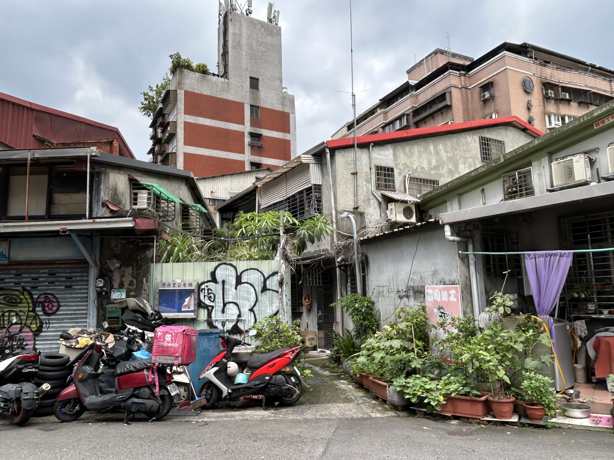
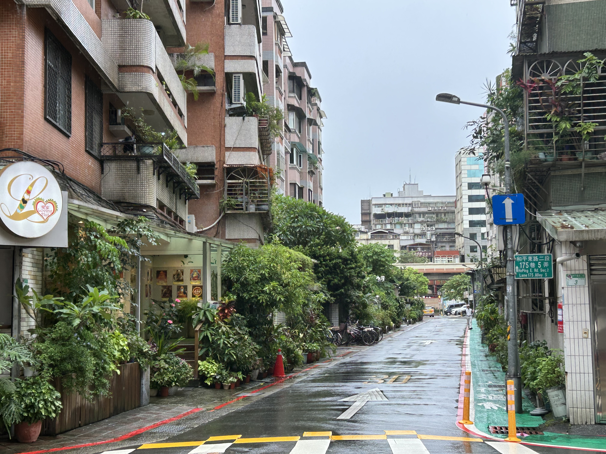
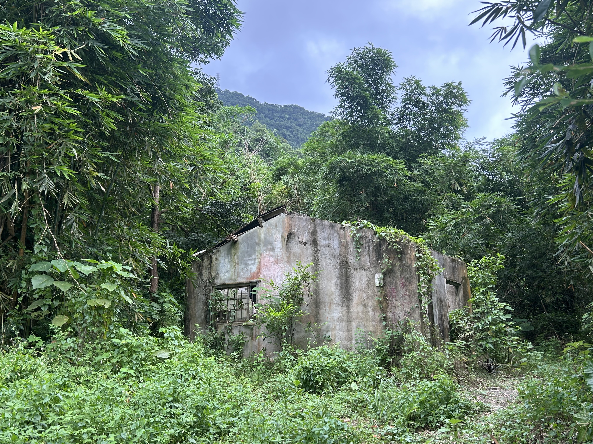

I should have made this when I got back, but now it's almost October, so I don't know how accurate my recounting will be. I have a good amount of record on my day to day activities of my trip, but this website is kind of bigger picture ideas. Ultimately, I learned that traveling is not as spiritually important as I thought it was. People always talk about how traveling the world has changed their life. I don't think I even know what people mean when they say this. Like it's fun to be immersed in a new culture, but not life changing. I guess it's because I've traveled my whole life that it doesn't feel crazy to me. I know how to navigate new environments, I've been exposed to so many different cultures and foods, and people speak English everywhere. I really tried to look out for ways in which I could see the world clearer over the course of this trip, but I think it was just fun. It felt like a total waste of resources and I felt so spoiled, it took me probably a week of feeling guilty before I could actually start enjoying my time there. I don't remember the timeline of me planning this trip. I considered going to a ton of places on Worldpackers, I don't know when I zeroed in on Taiwan. I didn't even look up anything about this country. The only information I had going in were Instagram reels about what to eat in the night markets. The first 2 days I was there there was a typhoon and it was pouring rain. Then, sitting in a park in Taipei, I googled like "summer trip to Taiwan" and every source said not to come during rainy season. I guess it was April that I gave up on finding internships and started applying to Worldpackers, then I realized I had enough money in my savings to go somewhere far away. Then I realized I could probably travel for the whole summer on my savings. I still have so much money, I actually don't try to manage it. I must have been applying to jobs at TSMC when I made my goal that I need to live in Taiwan and that this could be a networking opportunity. I do know a lot of engineers there. Anyways, I'm rambling and I haven't even talked about my trip.

My trip lasted from June 26 - July 31, 2026. I landed in the airport in Taipei at 10 pm, and I sat in a food court for an hour looking up places to stay and how to leave the airport. I had to stay in a hostel for 2 nights before I could move to my Worldpackers place. I don't remember the train ride, but I do know I had to walk 20 minutes from the main station to my hostel in the pouring rain at midnight. Taiwan is one of the safest places in the world, but I don't know if I knew that then. After checking in and getting my 3 story bunk bed, I went to the 7/11 across the street. I was so excited about all the convenience store food, and I told the girl at the counter that I had just arrived that night. She wanted to welcome me to Taiwan so she gave me 3 tea eggs and all the roasted sweet potatoes she had left. I had heard Taiwanese people are nice, and it was actually crazy the hospitality I felt this whole trip. I learned this summer that if you go to a place where there are no tourists, people are so happy to take you in and learn about your culture. i met the nicest people in Taiwan and the Balkans, and some of the rudest people in Vietnam and Iceland. The second day of my trip I realized that I had 3 weeks, so there was no reason to rush my trip. Normally, I try to hit all the museums in one day, and plan my meals to find all the best things. But my first day I ended up walking around. I got some Fantuan to eat in the park and I went to a mall to find hair dye. Oh and there was a food convention that was supposed to be for people that own restaurants or grocery stores, but they let me in and I got unlimited free samples for like 3 hours. As I said, it was pouring rain and this was the first time I had seen the space in the daylight. Everything was so exotic- it looked exactly like Haiwaii. It was so lush and the rain gave everything this beautiful green color. I sat and bird watched for hours because their birds are huge and kind of like cranes if they were stretched horizontally. I actually can't believe that I never searched up anything about Taiwan. I did not know it was a rainforest.
On my third day I got to move into the hostel where I would be working. I promise the story will pick up at this point. I stayed in a shared dorm with 6 beds. I had a loft with a curtain. It was cute, there was extra space to keep my stuff. I wasn't mad I was in a shared space at all. I was excited about this hostel because it was outside the city center and on the NTU campus. So there was a lot of greenery, but still very populated. The green line on the subway went to Gonguan station, right next to where I stayed. There was also a small night market right next to me with pork buns that were michelin bib gourmand. I loved this area so much. There were no other hotels, the whole place was locals. There were two different hikes that took you straight into the rainforest less than a 10 minute walk from where I stayed. I think I was in Taiwan for a week before I ventured into the wilderness, and this was when I realized how different the enviornment actually was. I was so shocked. Even on paved pathways you have to go through these exotic plants. There are spiders the size of my hand with 15 foot webs literally everywhere. I found that if you walk up the mountain next to me, the whole thing is residential and there's a garden at the top that had about 20 stray cats that played with me. It was so sureal. I learned that I would be cleaning rooms at this hostel, which sucked but it was fine. But every morning I would wake up around 8 and walk around before my shift at 10. I would walk for about an hour and get a coffee or breakfast or something. I did learn that Taiwan is one of the hottest places I've ever been in my life. It was 95 degrees with 100% humidity every single day. I got used to all my clothes being soaked with sweat every time I left the house. At least they believed in air conditioning in most places.
I loved pretty much everything about this country. The bikes were 10 cents per use and they had them everywhere in the city. I went to the public library to see if I could use their computers and they gave me a library card! There is a government subsidized gym that costs $2 for an hour. Taiwan is one of the happiest countries in the world because almost everyone is making a living wage and things are incredibly affordable. The night markets were my favorite. Pretty much every one opens at 5 pm and stays open until midnightish. Taiwan does not have a big drinking culture, except for the few clubs. But people were out walking at night everywhere in the city. They have a very late culture. It's such an interesting place because everything about the culture appears Chinese. Obviously, that is a sensitive subject so no Taiwanese people would admit that, even though they primarily speak Mandarin. So the vibe is East Asia, but the weather is Southeast Asia. All meaning to say, I had some great Chinese food. Every day I would try something different. The best things that I still think about are Lu Rou Fan, which is a braised pork rice. It's a side pretty much everywhere, they cook the pork in its own fat, and it is so fucking good. Also, they are famous for Taiwanese breakfast- I think mostly for the cultue surrounding it, but there are also interesting dishes. I LOVED savory soy milk. It's soy milk with vinegar so it's like a half way tofu. they top it with pickled mustard greens, pork floss, and it's served with a crunchy fried dough stick to dip. Also peanut ice cream wraps.
I actually cannot keep writing about this. It's been an hour and I really haven't hit any of my main points.